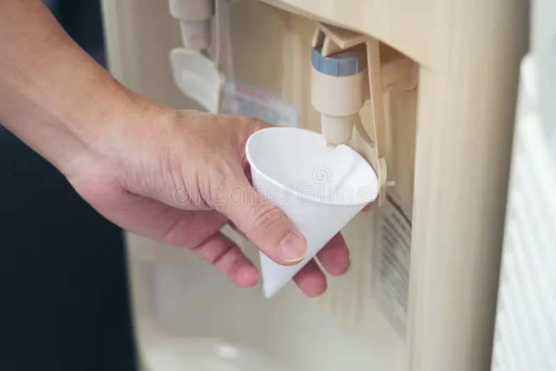
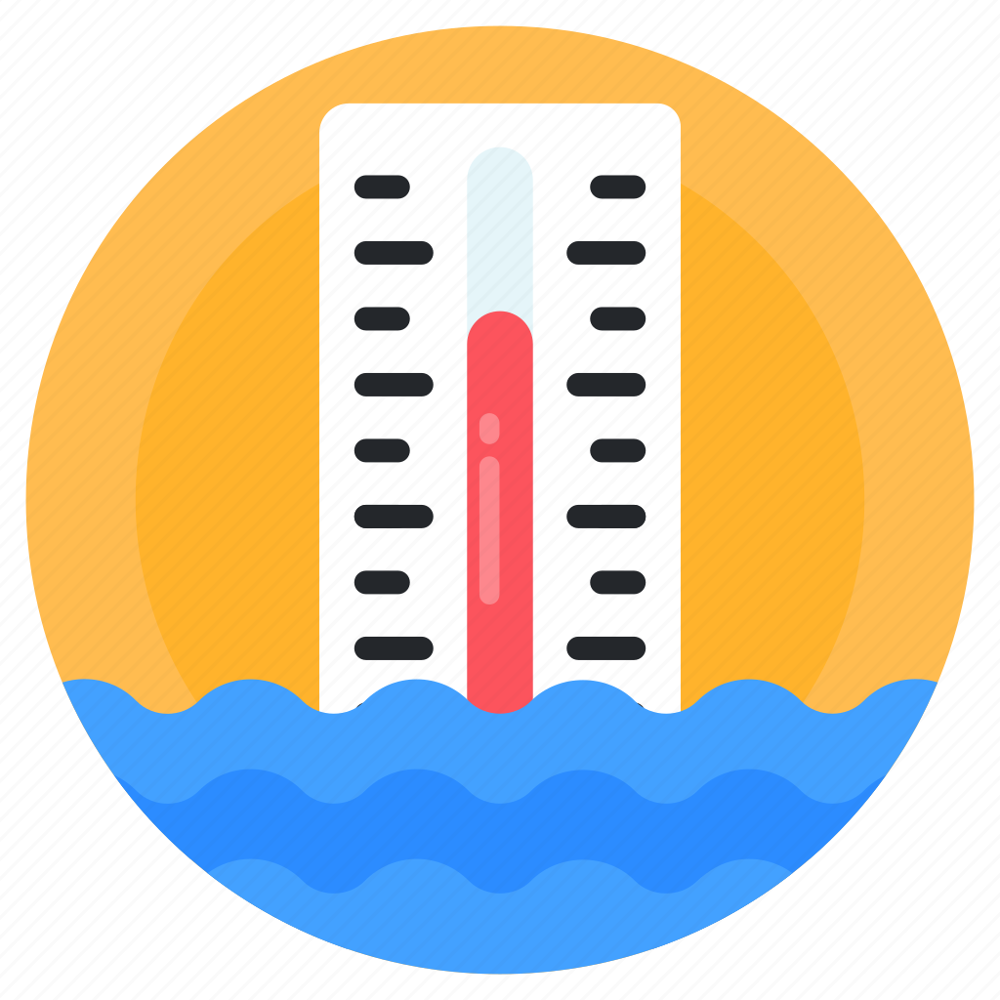
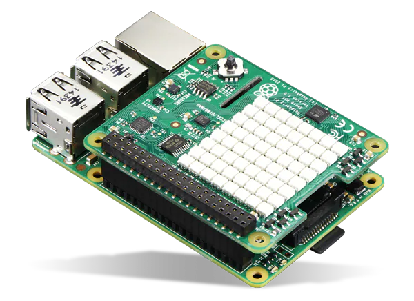

Experience fully automated water dispensing at the touch of a button.

Monitor water levels in real-time to ensure optimal usage.
Our touch sensors provide a responsive and intuitive interface.

Includes a stepper motor, air quality sensor, touch sensor, OLED display, and time-of-flight sensor to deliver comprehensive monitoring and control.